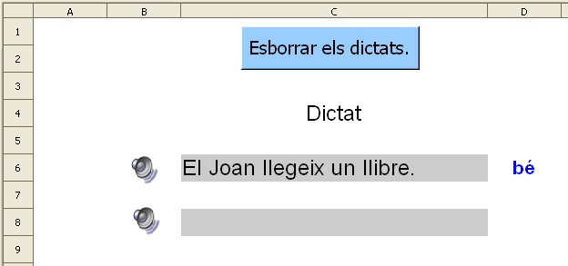
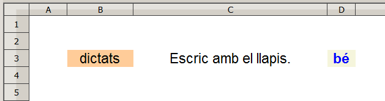
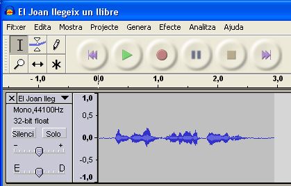
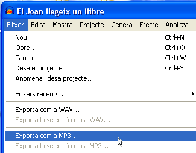

Dictats
Presentació gràfica de l'activitat

Funcions que es fan servir en aquesta activitat
- =HIPERENLLAÇ()
Objectiu de l'activitat
En aquesta pràctica es tracta de fer dictats i així treballar l'escriptura de les lletres de les paraules que interessi (g,j,tx, gu, güí ….). A més de treballar l'ortografia de les paraules, també serveix per a treballar la comprensió oral en alumnes que estan aprenent el català a les aules d'acollida (alumnes nouvinguts).
Desenvolupament de l'activitat
1. Obrir el fitxer M4 i afegir un nou full amb el nom de M4P4 dictats
2. Insereix | Objecte | Objecte Olé | Objectes addicionals (clic en d'acord) | Archivos de sonido (clic en aceptar).
Havent fet aquests passos, apareix una finestra anomenada “sonido, gravadora de so” i un altaveu.
3. Fent servir el micròfon i prement el botó de gravar de la gravadora, gravar el següent: El Joan llegeix un llibre.
4. Fer un clic a sobre del símbol del so i situar-lo a la cel·la B6
5. Escriure a la cel·la D6: =SI(C6="";"";SI(C6="El Joan llegeix un llibre.";"bé";"no"))
=SI(C6="";"";SI(O(C6="El Joan llegeix un llibre";C6="El Joan llegeix un llibre.");"bé";"no"))
6. Fer una macro amb les següent funció:
- Esborrar el contingut de la cel·la C6.
- Que la cel·la C6 rebi el focus.
7. Crear un botó de prémer de Controls de formulari i assignar-li la macro feta anteriorment.
8. Situar la macro com es veu en el gràfic de l'activitat de presentació.
9. Protegir les cel·les que convingui.
10. Per protegir la posició i la mida del símbol del so es pot fer el següent.
- Fer un clic a sobre del símbol del so i clic al botó dret del ratolí (menú contextual)
- Clic en “posició i mida” i apareix una finestra anomenada “posició i mida”.
- Fer clic a la casella de “posició” per activar l'apartat Protegeix.
11. Comprovar que l'activitat funcioni correctament fent elsegüent:
- Fer un clic al símbol de so i després pitjar la tecla intro. Havent fet aquesta acció, s'hauria d'escoltar l'oració que prèviament s'ha gravat (El Joan llegeix un llibre).
- Escriure l'oració a la cel·la C6 i pitjar la tecla intro per comprovar l'avaluació del dictat que apareixerà en la cel·la D6.
12. Desar el fitxer M4
………………………………
Una altra opció (amb el Windows Vista)

Aquesta activitat de fer dictats té l'inconvenient de no presentar de manera aleatòria diferents dictats. És a dir, aniria bé que cada vegada que es fes clic a la macro es presentés un nou dictat.
Per fer-ho, es pot fer el següent:
1. Mitjançant l'aplicació informàtica Audacity enregistrem quatre dictats:
- Obrir el programa Audacity

- Fer clic al botó de color vermell anomenat enregistra
 per començar a enregistrar el dictat: “escric amb el llapis”
per començar a enregistrar el dictat: “escric amb el llapis” - En acabar el dictat, fer clic al botó Atura't

- Del menú, anar a Fitxer i clic en Exporta com a MP3 i guardar el fitxer en C:\Dictats.


2. Suposant que el fitxer dictat 1 escric amb el llapis.mp3 s'hagi guardat en C:\Dictats, llavors s'escriu en la cel·la G3 el següent: =HIPERENLLAÇ("C:\Dictats\dictat 1 escric amb el llapis.mp3"). Observar que en fer clic en aquesta cel·la es podria escoltar el dictat.
- C:\Dictats\dictat 2 esborro amb la goma.mp3
- C:\Dictats\dictat 3 pinto amb els colors.mp3
- C:\Dictats\dictat 4 tinc un estoig de color blau.mp3
3. Escriure en la cel·la G4: =HIPERENLLAÇ("C:\Dictats\dictat 2 esborro amb la goma.mp3”)
4. Escriure en la cel·la G5: =HIPERENLLAÇ("C:\Dictats\dictat 3 pinto amb els colors.mp3”)
5. Escriure en la cel·la G6: =HIPERENLLAÇ("C:\Dictats\dictat 4 tinc un estoig de color blau.mp3”)
6. Escriure el número 1 en la cel·la F3 i estendre'l fins la cel·la F6 fent així una llista de números de l'1 fins el 4
7. Escriure en la cel·la F7: =ALEATENTRE(1;4) que servirà de criteri de cerca per a la consulta del següent pas.
8. Escriure en la cel·la B3: =HIPERENLLAÇ(CONSULTA(F7;F3:F6;G3:G6);"dictats")
En escriure aquesta fórmula, s'observa que en la cel·la B3 només es mostra la paraula “dictat”.Fent clic en “dictat” s'escolta el dictat. El dictat s'escriurà en la cel·la C3, com hagués pogut ser en qualsevol altra cel·la.
- Escriure en la cel·la H3: Escric amb el llapis.
- Escriure en la celEla H4: Esborro amb la goma.
- Escriure en la cel·la H5: Pinto amb els colors.
- Escriure en la cel·la H6: Tinc un estoig de color blau.
- Escriure a la cel·la E3: =CONSULTAV(F7;F3:H6;3) En aquesta consulta el 3 és l'índex
(la tercera columna de la matriu que conté el valor que s'ha de retornar)
- Escriure en la cel·la D3: =SI(C3="";"";SI(C3=E3;"bé";"no"))
10. Fer una macro que faci el següent:
- Que esborri el contingut de la cel·la C3
- Que actualitzi el valor de la cel·la F7
- Que la cel·la C3 sigui la cel·la activa (que rebi el focus)
11. Assignar la macro al botó de prémer.
12. Ocultar o desplaçar les cel·les que convingui.
13. Protegir les cel·les que convingui.
14. Comprovar que la pràctica funcioni correctament.
15. Desar el fitxer M4
- escoltar una cançó i escriure-hi el seu nom.
- fer dictats en diferents idiomes.

|
|

|
|
|